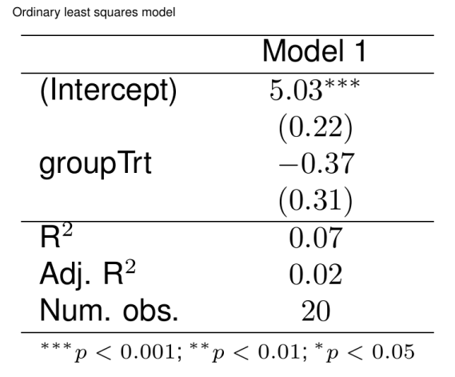

library(texPreview)
tex_opts$set(
returnType = 'html',
opts.html = list(width = '75%', height = '75%')
)knitr

texreg
Ordinary least squares model (example from the ‘lm’ help file)
ctl <- c(4.17,5.58,5.18,6.11,4.50,4.61,5.17,4.53,5.33,5.14)
trt <- c(4.81,4.17,4.41,3.59,5.87,3.83,6.03,4.89,4.32,4.69)
group <- gl(2,10,20, labels = c("Ctl","Trt"))
weight <- c(ctl, trt)
lm(weight ~ group)%>%
texreg::texreg(caption.above = TRUE,
caption = 'Ordinary least squares model')%>%
texPreview::tex_preview()
Linear mixed-effects models
library(nlme)
model.1 <- lme(distance ~ age, data = Orthodont, random = ~ 1)
model.2 <- lme(distance ~ age + Sex, data = Orthodont, random = ~ 1)
list(model.1, model.2)%>%
texreg::texreg(booktabs = TRUE,
dcolumn = TRUE,
caption.above = TRUE,
caption = 'Linear mixed-effects models')%>%
texPreview::tex_preview()